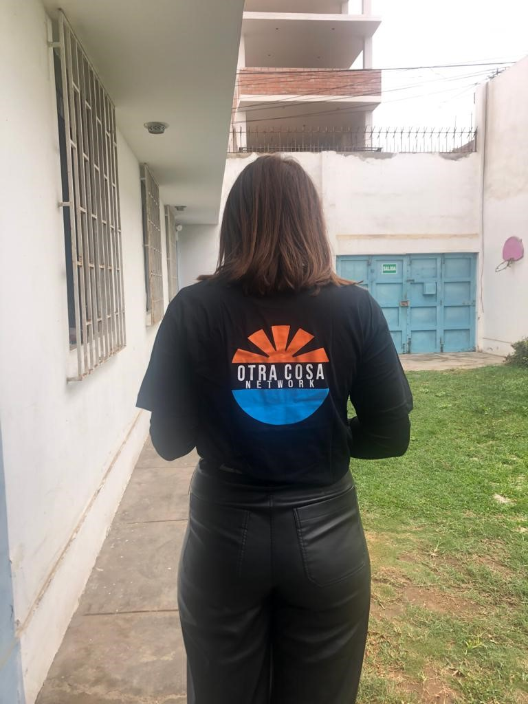

Héloïse Huchard
üíúHello everyone! My name is H√©lo√Øse Huchard. I am a third-year student at the Global BBA of ESSEC Business School in English track. Adaptable, curious, assiduous, and dynamic, I have developed communication and writing skills in both French and English. I have a great appetite for languages since I also practice Spanish and am interested in learning Mandarin. I really enjoy meeting new people and discovering new things!üíú
RESUMEüìöPROFESSIONAL EXPERIENCESüìö
2022- I am currently working as a Recruitment Assistant in parallel to my classes. The company I work for is Cityone, a recruitment agency. I am very versatile and work on several missions but mainly on the poles of reception in companies and in airports. Concretely, I pre-select candidates through their CVs, I call them on the phone and make them take some small tests, especially in English, I lead the recruitment sessions and the individual interviews and then I pass on the candidates to the operation and to our clients. I have a lot of responsibilities, which I really appreciate because at my young age, it is sometimes rare. I have great colleagues with whom I get along very well.


2022- I worked as a hostess in events in Paris for big companies like Ricard or Thalès. I also worked at the arms fair that brought together armies from all over the world. I was on a German stand, so I practiced my English and Spanish a lot. I participated in the organization of trade shows and seminars, welcomed and oriented French and foreign visitors, was an interpreter and translator on foreign stands and managed the checkroom and the bar.


2022- Have you ever wondered what the military is like? For me, it's a "world" that has often intrigued me. I discovered a small part of it when I joined the EPIDE. These are centers where young people between 17 and 25 years old who have dropped out of school and are unemployed are interned in order to find a framework and set up a project for their future. These are military-inspired centers where marching to the beat, guarding, uniforms, strict schedules, flag-raising and the Marseillaise are all part of the program. But there is also diversity, multiculturalism, exchanges and very diverse life paths. I lived in the heart of the action, and I lived in the center of Montry. I actively participated in the life of the center by accompanying the young people in their training course through general education, job search and housing but also in the overall life of the center. I was considered as a supervisor, who is supposed to be addressed as "Mrs.". At EPIDE, there are a multitude of profiles, but they all get up, eat and go to bed at fixed times, live together and sleep in dormitories where squaring up is required every morning. That's why they are called "volunteers" because in order to integrate the structure, you have to want it, to want to get out of it. We have all been told many times that rigor is one of the keys to the future. I think I was able to live a good example of this. The young Afghans who fled their country were often in a corner, marginalized within the group because of the language barrier and the supervisors who spoke little or no English. When I offered to interpret, I realized that the beginning of integration was based on communication. Having the words to say what you feel, what you want, the good and the bad. Here, I was strongly touched by cases that at such a young age, have already experienced so much. Some have crossed oceans to escape and find freedom, others have lost their brothers in trafficking, some have been homeless, others have big family problems or feel completely lost. Everyone has their own story but everyone wants to get out of it and is often grateful to be at EPIDE where they have a place to stay, food, a framework and a salary. I'm proud that I didn't break down in front of them, that I forced myself to open my mind to a struggle that wasn't my own, that I realized that nothing is taken for granted and that no matter how empathetic you are, you'll never be completely in the other person's shoes. And that it's almost pretentious to even try to put yourself completely in their shoes, because you never will. But that we can always include the human and the openness to others in our journey, and this is what I intend to do as a central pillar.
2018- I did a 3 weeks internship at "Wake Up Café", an association that helps the reintegration of prisoners. I was able to create and animate social network accounts; help write CVs and cover letters; organise events to raise awareness of the prisoners' cause; help with fundraising and partnerships; and run workshops with the people they support. This experience with this association has been very enriching from every point of view: on a personal level I have eliminated many prejudices I had about the prison environment. I gained in indulgence and understanding. I understood that the unknown was frightening and that I had to dare to cross this barrier. I was reinforced in the idea that it is important to be useful for others and to give of oneself, not only from a material point of view. From a "professional" point of view, I learned to take initiatives. Communication with the people I work with has enabled me to develop my ability to listen and exchange. I was also able to realise that I was able to integrate into a team that I did not know at all before.
2016- I also did an internship at the "Alpha Palmiers" hotel in Lausanne, Switzerland. During this internship, I was able to experience several areas. I received an introduction to management; I was in charge of reception and welcoming foreign tourists; house keeping; service and cooking and preparation of seminars. During this internship, I was able to measure the rhythm of a working day, to understand the different jobs related to the hotel and restaurant industry. In the hotel and catering industry, many different professions with different skills work together and complement each other. At each level, each profession is essential to the smooth running of a 4-star hotel.
üß°OTRA COSA NETWORK,PERUüß°
2021- I also had the immense luck and opportunity to spend 3 months with an NGO in Peru that fights for the education of children in the slums and the integration of women into society. I was already able to discover a completely different culture than my own, to integrate into a country where I did not speak the language perfectly. I was quite versatile since I taught French and English to the children. We were able to create a very important exchange that touched me a lot. I learned a lot on a personal level, but also on a professional level since I was in charge of relaunching the activity of the NGO during the covid, by recruiting new volunteers and by developing the communication and marketing. I improved my Spanish a lot, and I am still in contact with the children.
üêòSARI ESSECüêò
As Vice President of the association "Soutien Associatif aux Ressources de l'Inde et du Népal" (SARI) within ESSEC, I can express my deep respect for otherness. We set up humanitarian exchanges, fundraising and partnerships with companies, communication on social networks and partnerships with NGOs.

üéìCERTIFICATIONSüéì
During my schooling, I obtained different academic degrees:
- Junior School Certificate with distinction (>16/20).
- General Economic and Social Baccalaureate with distinction (>16/20).
- European Section Baccalaureate (History in English)
And here is my transcript for the 4 semesters of the first two years at ESSEC: Transcript ESSEC
I have also passed the IELTS English certification: International English Language Testing System (IELTS), in February 2022.
During my studies at ESSEC, I had the opportunity to take additional courses called MOOCs on the Coursera platform.
I decided to take :
- Excel Spreasheet Modeling at Harvard University.
- Geopolitics of Europe at Sciences Po Paris.
- Introduction to Communication Science at Amsterdam University.
‚úàüåéMEMORABLE TRAVELSüåé‚úà
Numerous family trips have allowed me to appreciate cosmopolitan and multicultural atmospheres. I had the chance to visit individually and itinerantly, favouring encounters and exchanges with the local populations. Two stays particularly marked me on the cultural level:
- the contrast of freedom between Hong Kong and the Chinese interior, which I had studied in the first year of high school for my research on the TPE. I was there at the time of the demonstrations. I saw both the economic dynamism and the control over the people.
- I also saw South Africa and the problems of Apartheid visible in the organisation of the cities and still marked in the relationships between people.
Of course, all the other trips also interested me: Japan, United States, Vietnam, Morocco, Canada, Italy, United Kingdom...
üèä‚Äç‚ôÄÔ∏èüñºÔ∏èINTERESTS AND ACTIVITIESüñºÔ∏èüèä‚Äç‚ôÄÔ∏è
LINGUISTIC STAYS :
I have also been able to do various language stays in English and Spanish speaking countries in international schools and with families, allowing me to live different experiences: United Kingdom, Ireland, United States and Spain.
MY PERSONAL ACTIVITIES AND INTERESTS :
- synchronised swimming, which brings me rigour and team spirit
- classical and modern choral singing in English
- political, economic and international news (TED Talks podcasts, newspapers...)
- theatres and exhibitions
- world music : French, English, Spanish, Russian, Arabic
MY COMMITMENT :- Food Bank in Paris since 2015 : Distribution of flyers in supermarkets ; Collection of food and hygiene products and Redistribution to needy people.
-Love in a Box" project with the American Church of Paris : Collection of necessities and gifts for underprivileged children and distribution of gifts for Christmas.
!!! WHAT'S NEXT? > BERKELEY !!!
I will be going to the United States at the beginning of January, to the University of Berkeley in California for 2 years. It's an entrepreneurship program based on artificial intelligence that awaits me. Ready for new adventures!